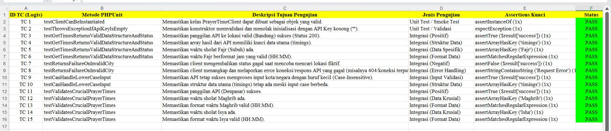

Software QA: Automated Testing (PHPUnit)
Melakukan pengujian teknis pada aplikasi Pencari Jadwal Sholat melalui 14 skenario uji (TC1-TC14). Mencakup Unit Testing untuk validasi API Key, Integration Testing untuk respons API Aladhan, serta Data Validation menggunakan Regex untuk format waktu (HH:MM).